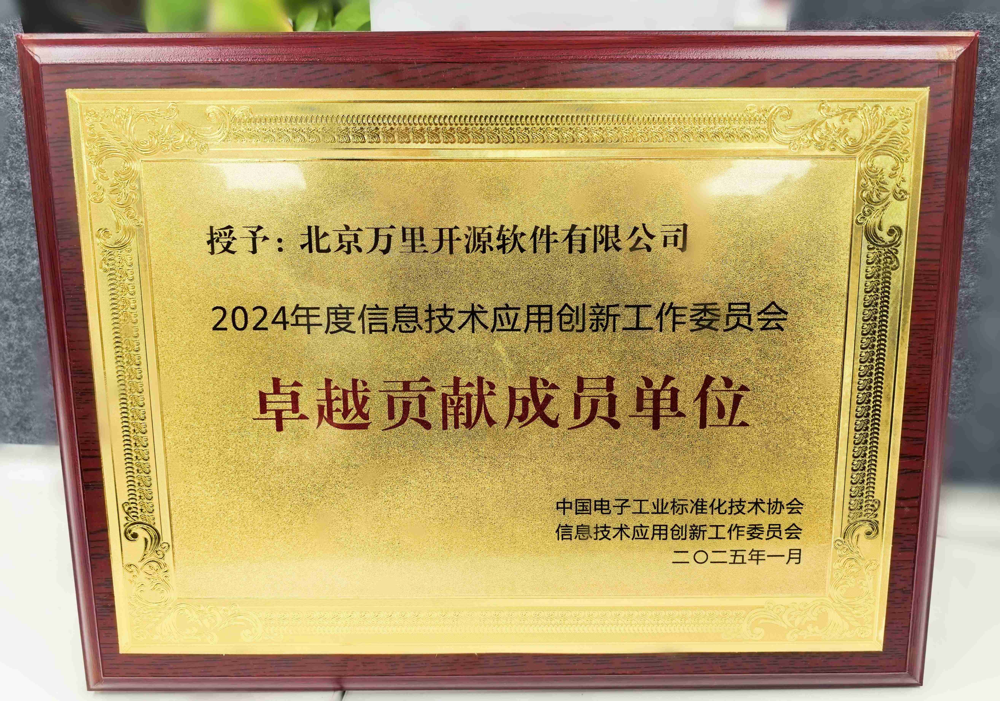
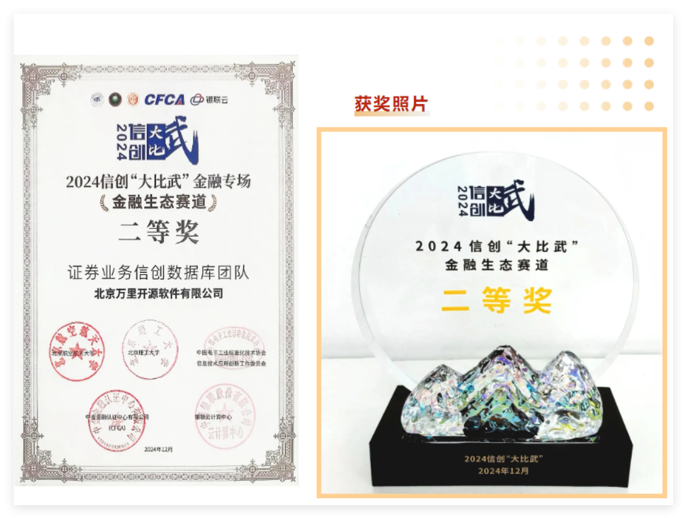

荣誉奖项 | 实力见证！万里数据库闪耀2024信创“大比武”大赛 揽获多项殊荣
近日，中国电子工业标准化技术协会信息技术应用创新工作委员会（以下简称“信创工委会”）在北京隆重
召开2024年度总结座谈会暨信创“大比武”总结大会。万里数据库凭借2024年在信创工委会中的各项出色工
作，以及在技术创新、生态共建和用户实践等多方面的显著成果，获评 “卓越贡献成员单位” 荣誉称号，
并在金融生态赛道斩获 “二等奖”。
一、助力信创发展 荣膺卓越贡献单位
回首 2024 年，万里数据库在信创工委会的大力支持与悉心指导下，全方位、深层次地融入信创生态建设与发展：

01技术创新领航
万里数据库始终保持对研发的高强度投入，安全数据库GreatDB在首批通过安全可靠测评后，公司研发团队
不断优化读写性能，提升产品安全性。同时，数据库一站式解决方案也在持续迭代升级，致力于为客户打造
更加便捷、易用且可视化的产品体验，有力推动了国产替代进程。
02生态共建协同
积极深度参与信创工委会工作，与众多行业伙伴紧密携手，开展广泛而深入的合作。通过整合各方资源、优势
互补，共同推动信创生态体系不断完善，促进信创产业协同发展。
03用户支持赋能
聚焦客户应用场景中的实际需求，为其提供高效、安全且定制化的解决方案，助力客户实现数字化转型，提升
核心竞争力，在数字化时代的浪潮中稳健前行。
二、聚焦金融领域 荣获金融生态赛道二等奖
与此同时，2024 信创 “大比武” 金融专场评审活动中，共设置 “金融生态”“金融安全”“AI 金融”“行业
融合” 四大赛道，相关奖项也在总结大会当天重磅揭晓。
万里数据库证券业务信创数据库团队提交的《证券行业核心交易系统信创数据库改造项目》，在上百家参赛单位
中脱颖而出，荣获“金融生态”赛道二等奖，再次彰显了公司在金融信创领域的技术实力和市场竞争力。

本次大赛由中国电子工业标准化技术协会信息技术应用创新工作委员会（简称”信创工委会“）联合北京航空
航天大学、北京理工大学共主办，中金金融认证中心有限公司（CFCA）承办，银联云计算中心协办。大赛吸引
了来自全国各地银行、保险、证券等金融机构及科技企业踊跃参与。经过严格的案例征集、材料初审、专家
终审等层层筛选环节，最终共有56家机构、75支参赛团队成功晋级终审阶段。
证券行业核心交易系统信创数据库改造项目创新性地采用了全套信创设施，其中GreatDB 在业务系统中
不仅实现了物理机部署，还实现了基于 K8S 的 DBaaS 部署，高度顺应了金融业整体上云的技术演进趋势，
为金融行业数字化转型提供了有力支撑。
万里数据库此次斩获 “卓越贡献单位” 及金融生态赛道 “二等奖”，是信创工委会对万里数据库自 2019 年
以来，积极投身国产化适配、标准制定等工作的高度认可和极大鼓励。未来，万里数据库将继续深耕信创领域，
持续加大研发投入，与行业伙伴保持紧密合作，共同推动信创产业迈向高质量发展新征程。
在金融信创的时代浪潮中，万里数据库将始终坚持以客户需求为导向，不断创新进取，努力满足客户多元化
需求，持续推动更多优质解决方案在金融领域落地生根，助力金融客户实现全面数字化转型，为金融行业的
高质量发展和科技自立自强贡献万里智慧与力量。